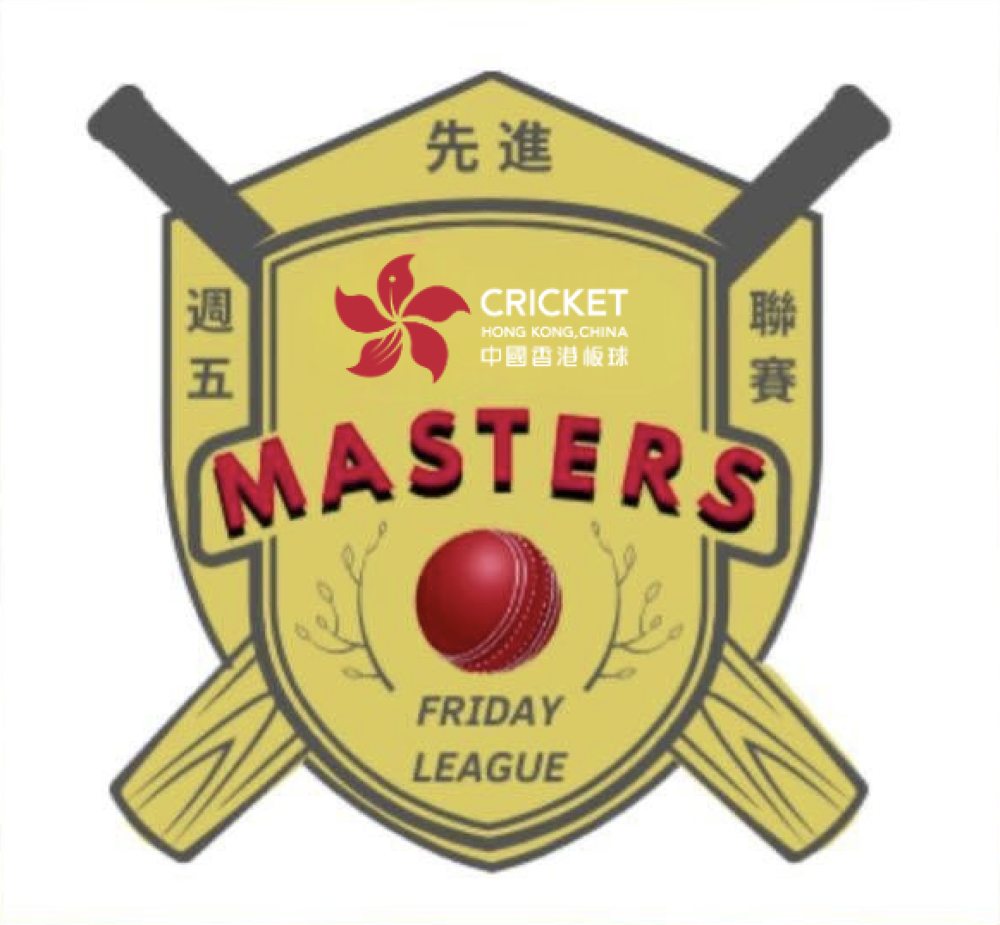

The Early Years: A Dream on a Helipad
The story of Lamma Cricket Club begins in 1990, when a ragtag group of players were invited to face the Hong Kong University Social XI at Sandy Bay — a tradition that endures to this day. But the club as we know it truly took shape in 1992, when Lamma’s growing community of cricket enthusiasts gathered for a meeting at the original Waterfront Restaurant. Thus began one of Hong Kong cricket’s most remarkable journeys.
Our first “home ground” was a disused helipad — one of the few flat areas on Lamma Island. “Flat” is a generous term; the first thing a batsman saw of the bowler was his head appearing over the horizon from an uphill run-up! Our equipment was equally modest: one bat, one ball, and some tatty old pads. The Island Bar became our first sponsor, providing shirts and equipment that helped us look like a proper cricket team.
The cradle of the Lamma C.C. — a disused helipadLamma C.C. circa 1992The practice net on Yung Shue Wan, Lamma
A Symbol of Lamma
Our distinctive logo captures the island’s character — the map of Lamma Island framed by the chimneys of the power station, our chief landmark. As any local knows, the power station originally had only two chimneys; whether HK Electric added a third to match our stumps remains delightfully unconfirmed. The green represents our lush island home, while the yellow was chosen for our golden beaches and brings energy to the design.
On Tour
Roaming the Region: A Touring Tradition
As grounds in Hong Kong became harder to secure, we took our cricket to the region. Our tours read like a cricketing travelogue:
Angeles City, PhilippinesBangkok, ThailandChiang Mai, ThailandColumbo, Sri LankaGranada, SpainHanoi, VietnamManila, PhilippinesPerth, AustraliaPenang, MalaysiaPhuket, ThailandShanghai, ChinaUlan Bataar, Mongolia
Kandy, Sri Lanka, 1995Angeles, Philippines, 1995Hanoi air force base, Vietnam, 2001
1994–1996
The Competitive Rise
Our early social seasons brought little success — if any, truth be told — but we persevered, driven by love of the game with the 1994–95 season proved our breakthrough, winning every social game and reaching the Saturday Cup quarter-final before losing by one run to the eventual champions. In September 1996, we achieved admission to the Saturday League.
1997–2003
Silverware and Recognition
The late 1990s marked our arrival as a competitive force:
1997–98: Finished joint 10th in the league, reached the Saturday Cup quarter-final
1998: Entered two teams in the Summer Eights competition and won the league
1998–99: Brad Tarr earned “Captain of the Year” from the Hong Kong Cricket Association as we finished a highly creditable 4th place in the Saturday League — a team more used to winning than losing
1999: Won the HKU Invitational Sixes and reached the Saturday Cup final
2002–03: League Champions! After years of consistent performance, we secured the Saturday League title, the crowning achievement of our competitive journey.
That season also saw us win the Plate in Shanghai, reach the quarter-finals in Chiang Mai, and the semi-finals of the Summer Eights.
Surprise Craigengower Sixes Champions, 1996The big one — Saturday League Champions, 2002/03HKU Invitational Sixes Champions, 1999
Off the field
Building a Club, Building a Community
Beyond competitive success, Lamma CC has always been about community. The summer of 1999 saw our inaugural black-tie Dinner & Dance — a celebration of awards, dressing up, and good times. Each year Lamma adds events and activities for our members, from fitness routines and family events to service events to raise funds for our Lamma Roses.
The Cricketers Ball, 2006, at The WharneyThe social team that chased 324 — in 35 overs! 2011Saturday League team, 2008
Women’s Cricket
The Women’s Program: A Trailblazing Force
Lamma CC has long been a pioneer in women’s cricket in Hong Kong. Throughout the 2000s, our women’s team set the standard, capturing multiple Women’s League and Women’s Cup titles and producing players who went on to represent Hong Kong at the international level — a proud chapter in our club’s history that we look back on with immense pride.
Like many clubs, we faced challenges in the 2010s as life in Hong Kong evolved and key members moved on to new chapters overseas. Our established women’s team took time away from competitive cricket — but the spirit never faded. The commitment to growing the women’s game remained central to who we are as a club.
That commitment bore fruit in the early 2020s when we saw an opportunity to rebuild, and we did so with purpose. In 2023, we proudly launched the Lamma Roses — a team built not just to compete, but to embody everything this club stands for: community, passion, and the unique spirit of Lamma Island.
The Roses are more than a team; they are a statement of our values. Every member receives full club membership, and the program is 100% supported and funded by Lamma Cricket Club — a reflection of our belief that women’s cricket deserves serious investment and unwavering commitment.
Today, the Lamma Roses are writing their own story — building on the legacy of those who came before while forging a new path forward. It’s a story we’re proud to tell, and one we invite everyone to be part of.
The Lamma Roses — launched in 2023Flying the Roses bannerWriting their own story
2018–
Challenge League: Two Teams, One Spirit
Lamma Cricket Club expanded its competitive footprint in 2018–2019 when we entered the Challenge League with our first team, Power. Five years later, in 2023–2024, we doubled our presence with the addition of a second side, Vikings — a testament to our growing depth and ambition.
The Challenge League is a dynamic T20 competition featuring three divisions of nine teams each. Every side faces the others in their division once, with promotion and relegation adding edge to every fixture. The season culminates in a grand final between the top two teams in each division, where champions are crowned and bragging rights earned. Matches are typically played on Sundays — the perfect way to cap off a weekend with high-energy cricket.
Whether you arrive with a group of friends or step up on your own, Lamma CC offers an open and welcoming environment. Our Challenge League teams are built on enthusiasm, team spirit, and a genuine love for the game — values that define who we are as a club.
At Lamma CC, we’re proud of the journeys our players are writing on and off the field. From debutants to seasoned campaigners, the Challenge League gives everyone a chance to compete, improve, and belong.

The Friday Masters League: Where Legends Play On
In 2023, Lamma Cricket Club identified a gap in Hong Kong’s cricketing landscape. Too many talented, experienced players found themselves sidelined — not by a lack of passion or ability, but simply by a system that offered few opportunities for veterans to compete.
Local competitions rarely catered to the over-40s, leaving a generation of cricketers without a regular outlet to stay connected to the game they loved. Lamma CC saw an opportunity to change that.
Enter Royce MacDonald, a driving force within the club, who championed a vision for a structured, competitive league for the 40-plus age group. His idea was simple but ambitious: bring together teams from across Hong Kong in a Friday night competition that prioritised skill, camaraderie, and the pure enjoyment of the game.
That vision became the Friday Masters League in the 2023–2024 season — and it quickly exceeded all expectations. What started as a modest initiative grew into a vibrant, formal competition that now stands as one of the most cherished fixtures on Hong Kong’s cricketing calendar.
The Friday Masters League is more than just a competition. It’s a celebration of the enduring spirit of cricket — proof that the game doesn’t retire when players do.
It’s about keeping friendships alive, building new rivalries, and reminding everyone that cricket is a sport for life.
At Lamma CC, we’re proud to lead this initiative and to provide a platform where experience meets enthusiasm, and where legends of the game continue to write their stories — on Fridays, doing what they do best.
Today
Where We Stand
Lamma CC remains unique in Hong Kong cricket — a club without its own ground that fields both a League Team, two Challenge League Teams, organizes and manages the Friday Masters League and one Women’s Team. Our large and keen membership proves that a ground isn’t what makes a club; it’s the people, the passion, and the spirit of the game.
A Message to Supporters
Lamma Cricket Club represents something special in Hong Kong’s sporting landscape. From humble beginnings on a helipad to league champions, international tournament winners, and organisers of major events — we embody the spirit of grassroots cricket and the vibrant community of Lamma Island.
We offer:
A proud heritage with over three decades of history and achievement
A passionate and growing membership across men’s, women’s, and Masters cricket
International exposure through our tours
A unique brand tied to one of Hong Kong’s most distinctive communities
A commitment to excellence on and off the field
Join us as we write the next chapter of Lamma Cricket Club’s story. Together, we can keep the dream alive.